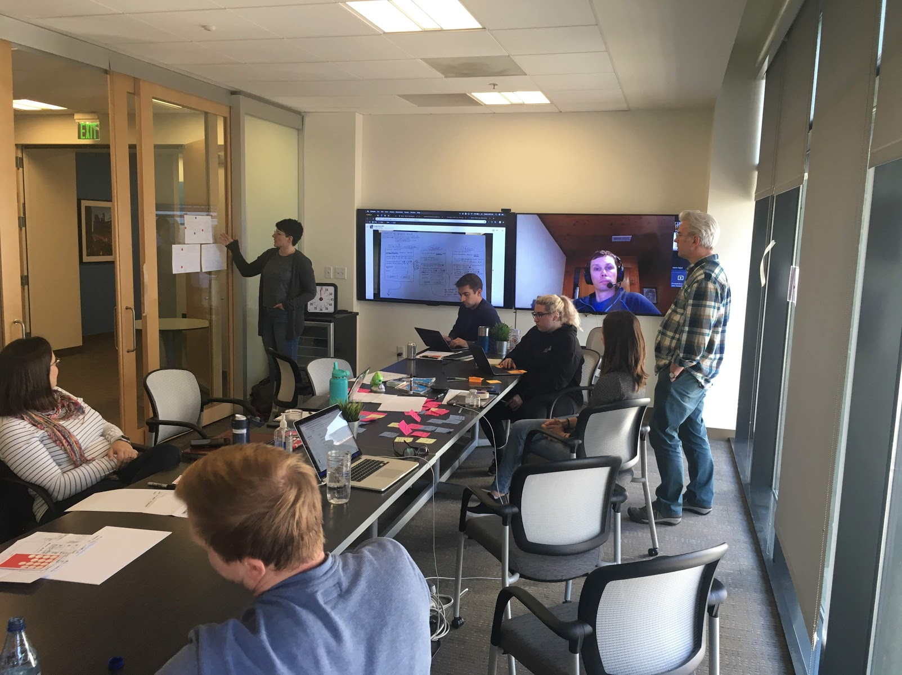
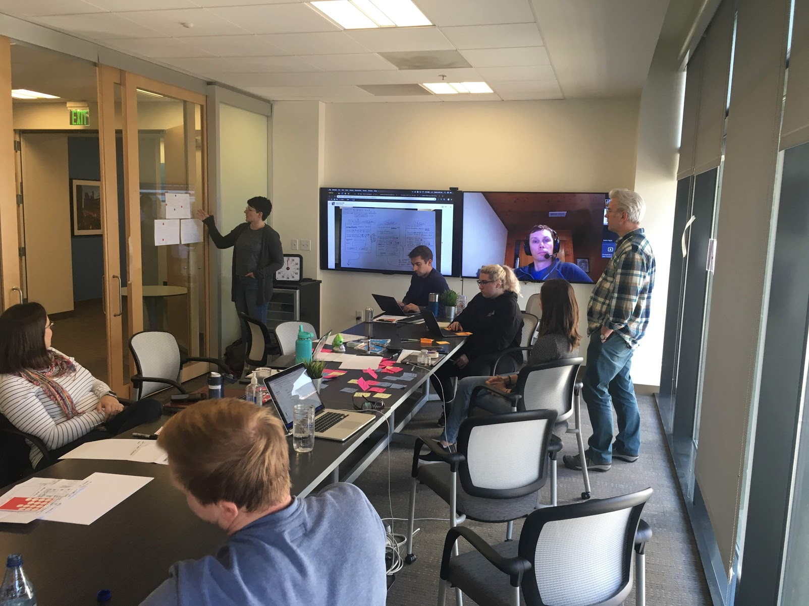

Mavenlink
About Mavenlink
Housecall Pro (HCP) is a SaaS operating platform combined with modern financial services and supporting business solutions that helps home service professionals run all aspects of their business.
Role & Responsibilities
- Lead Designer
- Conducted extensive user research, including 50+ in-depth interviews with resource managers.
- Communicated design decisions and strategic directions to stakeholders and executive leadership.
- Developed interactive prototypes, tested designs, and iterated based on feedback.
- Created UI and interactive prototypes and collaborated closely with engineering to bring the vision to life.
Case Study
Resource Planning Opportunity
Resource planners face ongoing challenges in ensuring delivery teams are set up for success. With shifting demands and priorities, they need tools to plan ahead and maintain a balanced, healthy workforce. Beyond logistics, this solution aimed to empower resource planners to play a more strategic role, helping them not only allocate resources effectively but also foster team satisfaction and career growth.
Desired Outcome
Position Mavenlink as a leader in resource management within the professional services market. In 2017, Mavenlink identified an opportunity to stand out with an innovative solution that addressed these industry needs. I joined as the lead designer on the resource management initiative, which culminated in a January 2018 product release.
Process
Our team began by interviewing resource managers to understand their unique responsibilities, from balancing workload (demand) with available talent (supply) to collaborating with project and people managers. These insights guided our design strategy and helped clarify the flexible solution we needed to build, as resource planning roles vary greatly across organizations.

 


- Research Synthesis & Iterative Testing: Shared key findings and design themes with stakeholders early on, integrating insights into initial design concepts. We engaged engineering from the outset, allowing time to consider implementation challenges and opportunities.
- Prototyping & Validation: Developed and tested prototypes with resource managers, iterating based on real-world feedback. Our process highlighted essential flexibility, such as accommodating different preferences for allocation views (e.g., percentages vs. hours per week), ensuring the solution could adapt to diverse business needs.
- Collaborative Build: Finalized a v1 scope that focused on core functionality and began a collaborative build phase with engineering. Continued iteration with engineering during development that led to a responsive, intuitive UI, enabling users to see the immediate impact of their actions.

Outcome
By January 2018, we launched a resource management solution that empowered planners with a flexible, user-friendly interface designed to improve both operational efficiency and strategic workforce planning. This collaborative, research-driven approach resulted in a solution that has supported Mavenlink’s differentiation and growth in the professional services space.